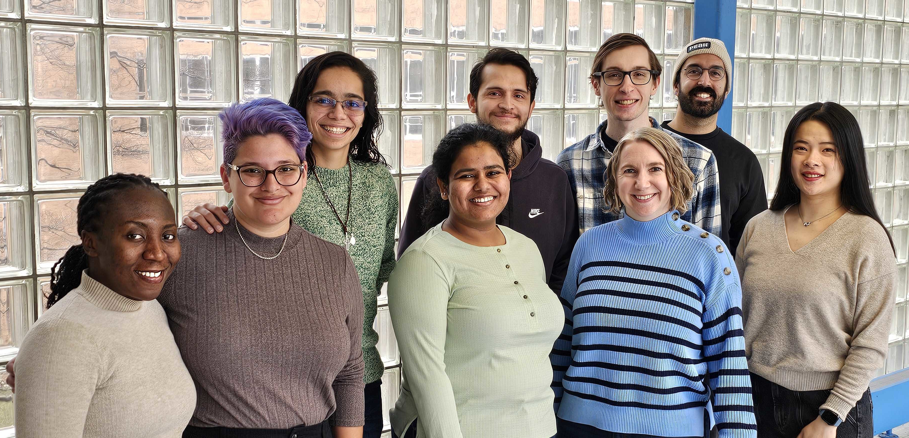
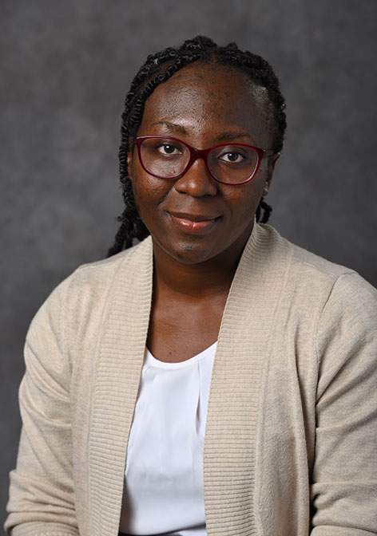
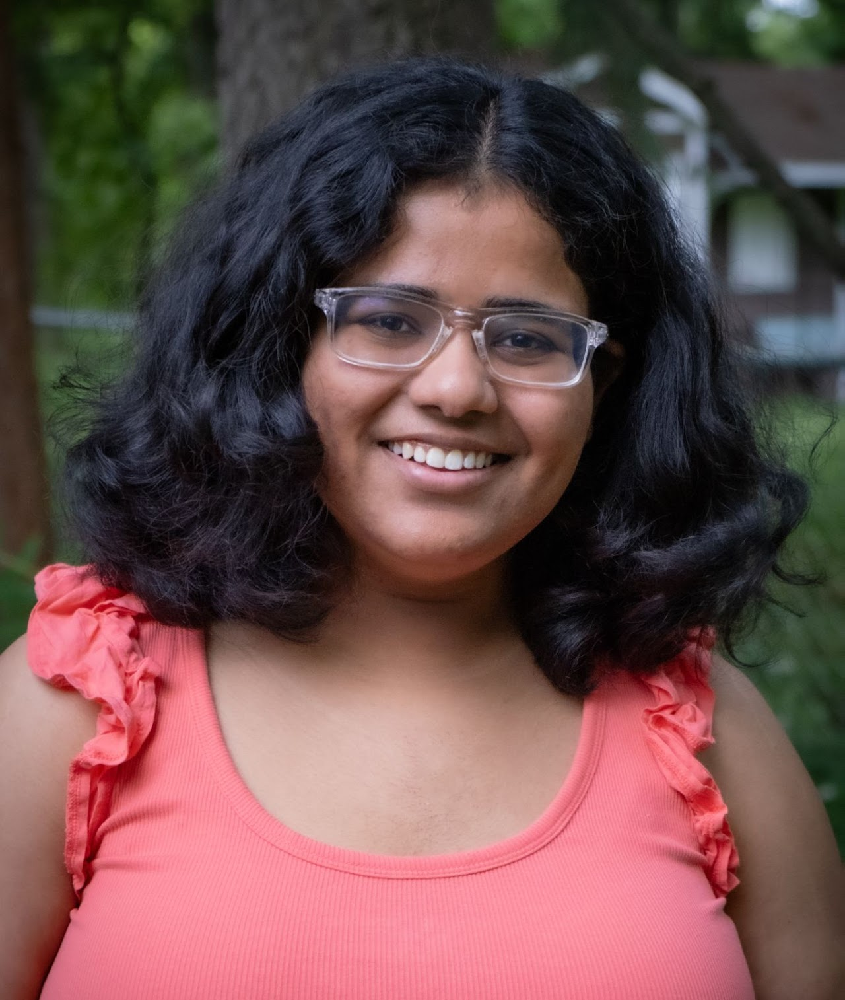
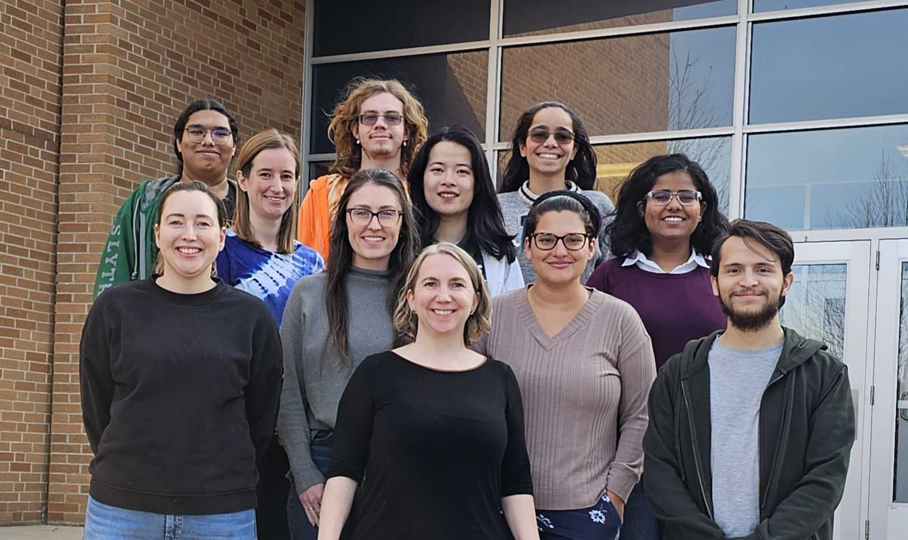

MunchLab
Welcome to the Munch Lab group page! We are a group of mathematicians and data scientists interested in interdisciplinary research, topological data analysis, and implementing ways to improve the STEM culture. Loosely based, we work on three topics:
-
Topological Time Series Analysis: Given a real valued time series arising from a dynamical system, we can convert the data into a point cloud via signal processing tools and then analyze the results using persistent homology.
This work has also involved the intersection of persistent homology and machine learning for evaluation of the outputs.
This work is largely based in collaborations with Dr. Firas Khasawneh.
-
Graphical signatures and interleaving distances: We study the Reeb graph, a graphical signature of data, and, in particular the development of metrics for their analysis.
The basic idea behind the Reeb graph construction is to skeletonize input data given a filtration function and has both important theoretical and practical implications for data representation and analysis.
This work incorporates a wide array of mathematical tools, including category theory, to build new methods for data analysis. Most recently, this work involves collaborations with Dr. Erin Chambers.
-
Image Processing and plant morphology: We utilze the tools available from TDA to answer questions from applied plant sciences; namely, to create methods for measuring and analyzing plant morphology.
This work encompasses a collection of ongoing projects with Dr. Dan Chitwood (MSU Horticulture/CMSE) whose lab produces X-Ray CT scans of plants down to micron resolution.
Combining our expertise in TDA, algorithms, and image processing, with his biological expertise has proven to be a very successful and truly interdisciplinary collaboration. More info can be found on the Morphology Lab website.
Joining the group
If you are interested in joining my group as a PhD student, there are two possible avenues since I have appointments in both the CMSE department and the Math department.
- For the CMSE department, students are directly admitted into a researcher's lab, so I need to have a funding mechanism (most usually a grant) available to admit students in this manner. If you are interested in the CMSE program, you should be sure to contact me in advance to see if I am accepting PhD students in the program. Then, you should apply to the CMSE PhD program at MSU and indicate your interest in working with me. Students in the CMSE program tend to be funded largely through research assistantships, so it is important to have a conversation with me in advance to see if I have funding available. This also means that your research direction will be largely determined by the funding source. However, there are also opportunities for teaching assistantships in the CMSE department depending on the student's interest and availability of ongoing funding.
- For the math department, students are admitted to the department and then choose an advisor a year or two after they arrive. If you are interested in working with me as a Math PhD student, know that I have less direct control over the admittance process, but you can still contact me if you are applying through this manner and are particularly interested in TDA. In this case, you should apply to the Math PhD program at MSU and indicate your interest in working with me. Students in the Math program tend to be funded through teaching assistantships. This means that while you will have more freedom in your research direction, you will also have more teaching responsibilities.
Group Members
Current Postdoc Group Members
-

- Nkechi Nnadi
- FTAP (Postdoc), MSU CMSE
- Joined Fall 2024
-
- Yemeen Ayub
- Postdoc, MSU CMSE
- Jointly advised with Dan Chitwood
- Joined Fall 2024
Current Graduate Student Group Members
-
- Rachel Roca
- PhD Student, MSU CMSE
- Jointly advised with Danny Caballero
- Joined Fall 2021
-
- David Muñoz
- PhD Student, MSU CMSE
- Joined Spring 2022
-
- Astrid Olave
- PhD Student, MSU Math
- Joined Spring 2022
-

- Ishika Ghosh
- PhD Student, MSU CMSE
- Joined Fall 2022
-
- Kevin Woytowich
- PhD Student, MSU Math
- Joined Summer 2025
Former Group Members
- Elena Wang
- PhD Student, MSU CMSE
- Graduated May 2025
- Sarah Percival
- Postdoc, MSU CMSE & BMB
- Jointly advised with Dan Chitwood, Beronda Montgomery, Arjun Krishnan, and Aman Husbands
- Group member 2021-2024
- Sarah McGuire
- PhD Student, MSU CMSE
- Graduated May 2024
- Danielle Barnes
- PhD Student, MSU CMSE
- Graduated May 2024
- Erik Amézquita
- PhD Student, MSU CMSE
- Jointly advised with Dan Chitwood
- Graduated May 2023
- Christopher Potvin
- PhD Student, MSU Math
- Graduated 2023
- Sourabh Palande
- Postdoc, MSU CMSE
- Jointly advised with Dan Chitwood
- 2020-2023
- Sarah Tymochko
- PhD Student, MSU CMSE
- Graduated 2022
- İsmail Güzel
- Visiting researcher, 2021-2022
- Shelley Kandola
- Postdoc, MSU Math
- 2019-2021
- Tim Ophelders
- Postdoc, MSU CMSE
- 2018-2020
-
- Anastasios Stefanou
- PhD Student, UAlbany Math
- Graduated 2018
-
- Mitchell Eithun
- Masters Student, MSU CMSE
- Graduated 2019
-
- Christopher Sukhu
- Masters Student, MSU CMSE
- Graduated 2019
-
- Kayla Makela
- Research Assistant, MSU CMSE
- Jointly advised with Dan Chitwood
- 2018-2021
-
- Brian Bollen
- Undergraduate Student, UAlbany Math
- May 2016-July 2017
-
- Akanksha Atrey
- Undergraduate Student, UAlbany Math
- Jan 2015-June 2016
-
- Bill Dong
- High School Student, Advised through the UAlbany Math Department
- June 2015-August 2016
- Top row: Ray Hasan, Sarah Percival, Denis Selyuzhitsky, Elena Xinyi Wang, Astrid Olave, Ishika Ghosh
- Bottom row: Danielle Barnes, Sarah McGuire, Liz Munch, Rachel Roca, David Munoz
- Top row: Nathan Willey, Denis Selyuzhitsky, Danielle Barnes, Sourabh Palande, Sarah McGuire, David Munoz
- Middle row: Elena Xinyi Wang, Sarah Percival, Valeri Jean-Pierre, Erik Amezquita, Astrid Olave
- Bottom row: Christopher Potvin, Rachel Roca, Liz Munch, Ishika Ghosh
- Top row: Sarah Percival, Sourabh Palande, Ismail Guzel, Yash Gautam
- Middle row: Elena Wang, Danielle Barnes, Erik Amezquita, Rachel Roca
- Bottom row: Christopher Potvin, Liz Munch, Sarah McGuire, Sarah Tymochko
Previous Group Pictures
2023-2024
2022-2023